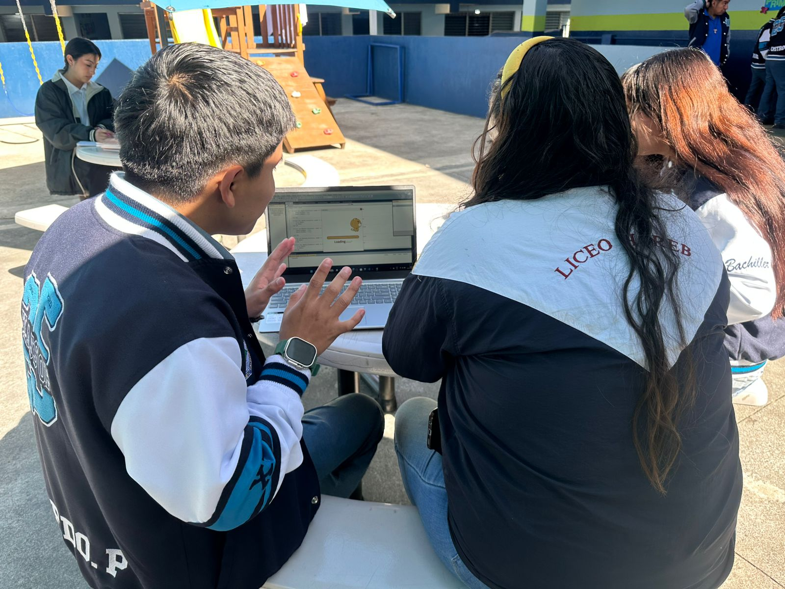
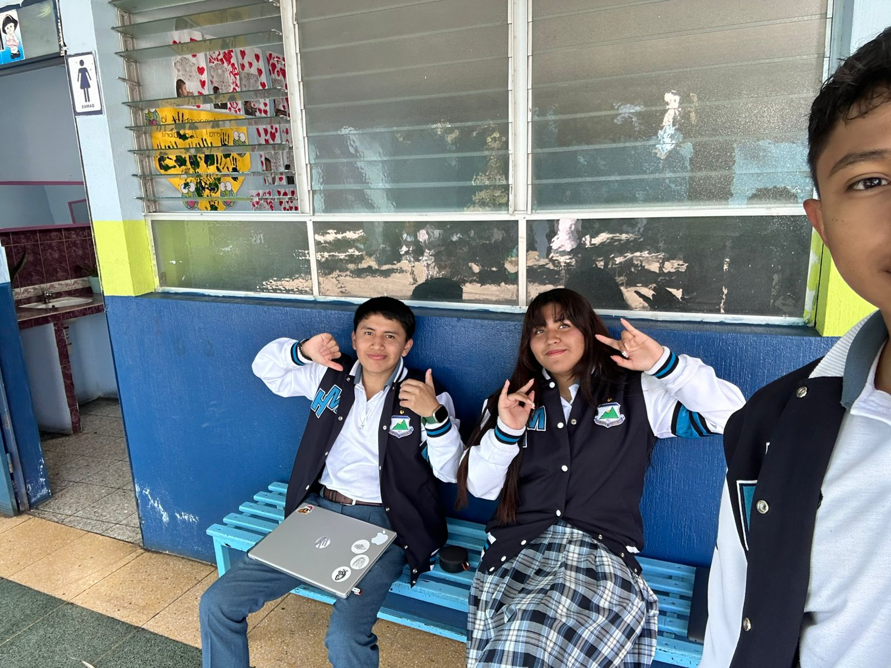
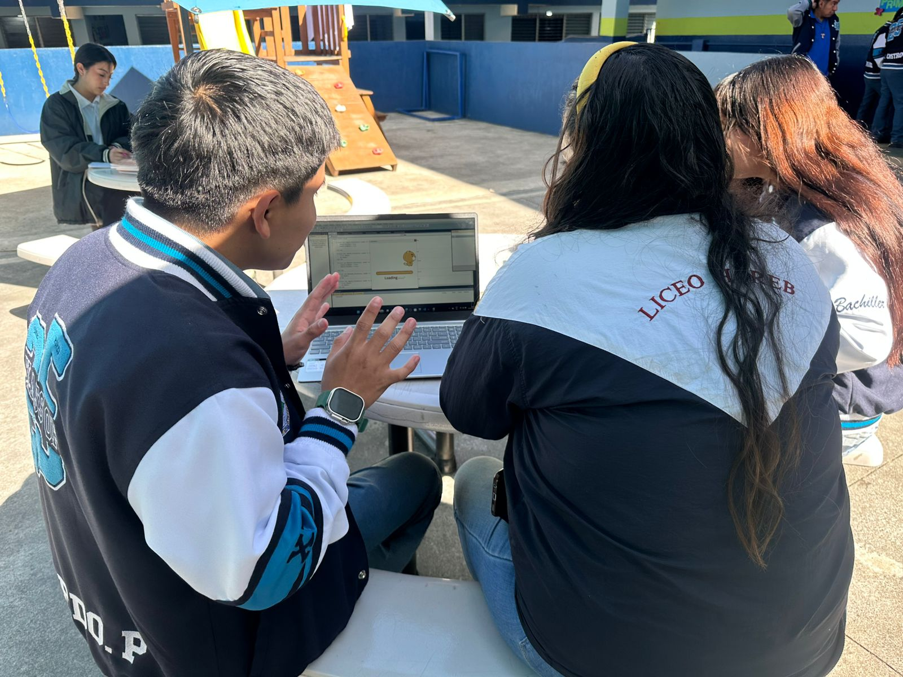
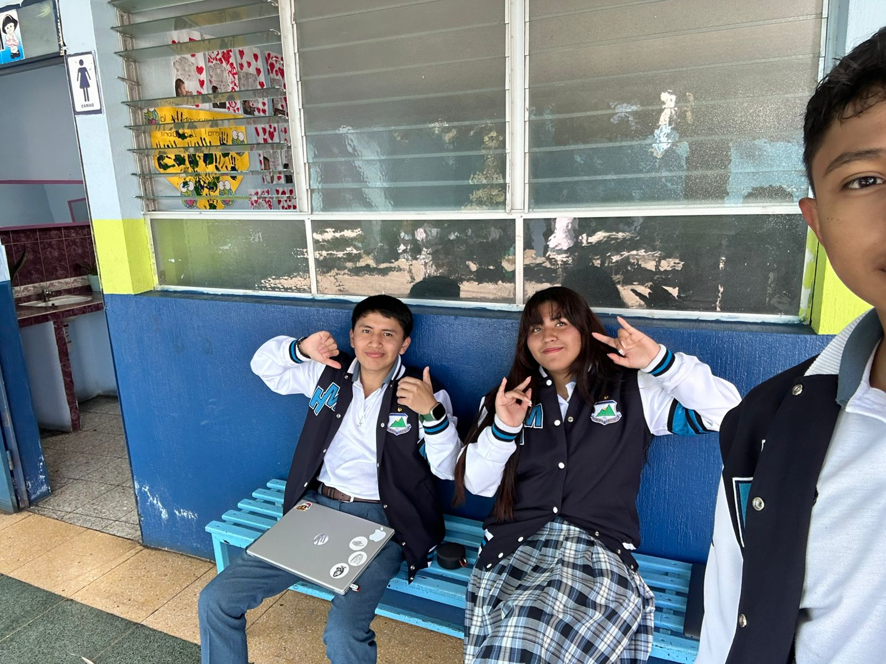
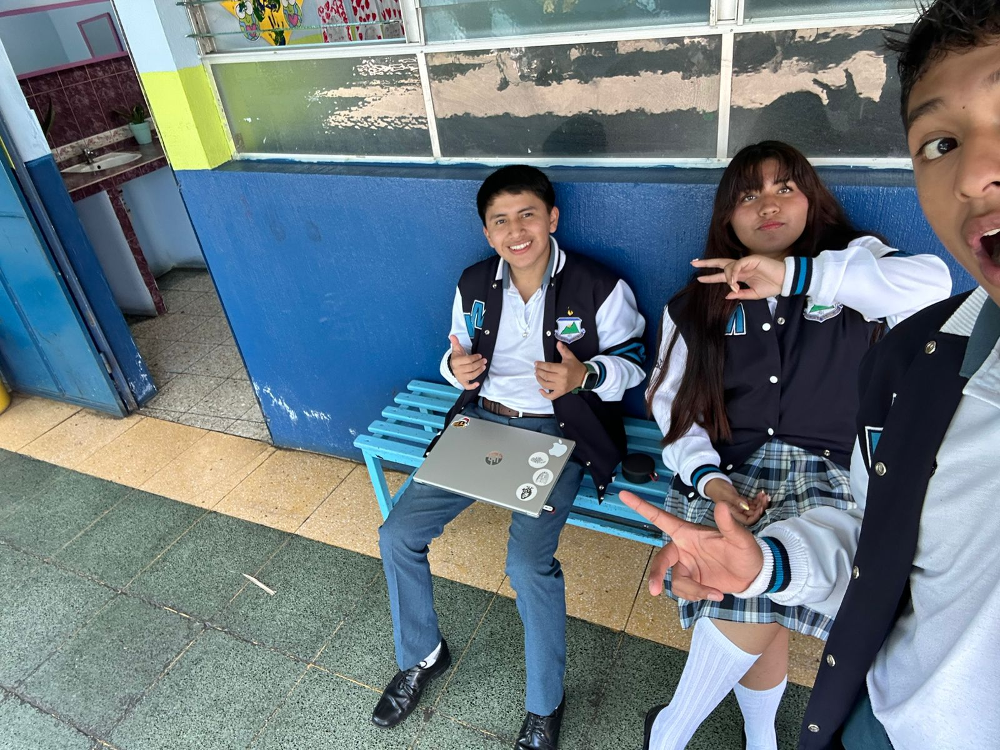
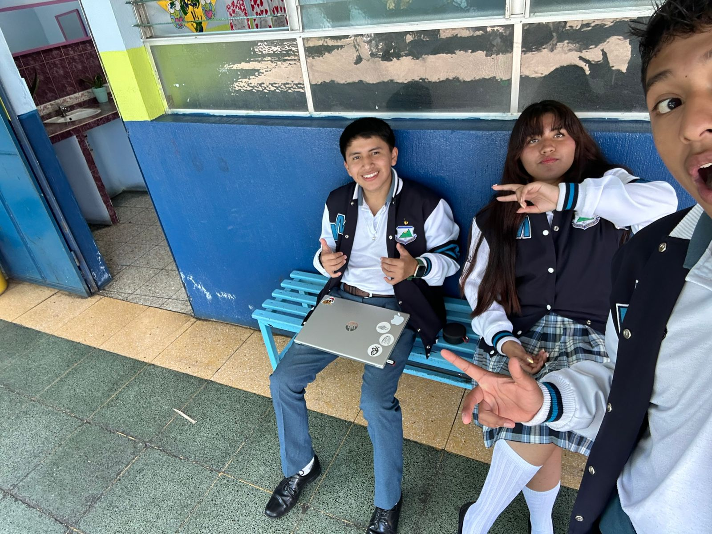

¿Qué es Ruge y Aprende?
Es un juego interactivo infantil lleno de diversión y aprendizaje. Los niños conocen más sobre los animales, sus hábitats y cuidados, todo mientras juegan en un mundo mágico lleno de color.
🦠Personajes del Juego
Conoce a Leo el León, Trompita el elefante y Manchitas la jirafa. Cada personaje te guiará en diferentes misiones educativas y aventuras.
🮠Mini Juegos Favoritos
Mini juego memoria animal. ¡Desbloquea niveles por cada misión completada!
📘 Aprende Jugando
Con cada actividad los niños desarrollan habilidades cognitivas, conocimiento ecológico animal y valores de respeto a los animales y la naturaleza.
📸 GalerÃa de Aventuras


 



 



📖 Acerca del Juego
🯠Objetivo Educativo
Fomentar el amor por la fauna. Enseñar sobre hábitats naturales. Incentivar el aprendizaje activo. Promover el respeto ambiental. Desarrollar la memoria y atención.
👶 Edades Recomendadas
Ideal para niños de 4 a 10 años. Actividades adaptadas por edad. Ilustraciones amigables y didácticas. Sonidos suaves y educativos.
ⓠ¿Por qué jugar?
Aprender jugando es más divertido. Explorar nuevos mundos animales. Desarrollar empatÃa con la naturaleza. Pasar tiempo de calidad en familia.
📲 Descarga la App
Disponible para Android y iOS. Juega en cualquier momento y lugar, sin conexión. ¡Ideal para viajes o momentos de espera!


🗣 Opiniones de los usuarios
📠Opiniones anteriores
🧬 ¿Qué es el SÃndrome X?
El “SÃndrome X†es una condición genética poco común que puede afectar el desarrollo de los niños. Este videojuego ha sido diseñado con apoyo de educadores y especialistas para crear un entorno seguro, respetuoso e inclusivo para todos los pequeños.
Promovemos la empatÃa y la comprensión desde edades tempranas, integrando personajes y experiencias pensadas para incluir a todos los niños, sin importar sus capacidades.
CaracterÃsticas comunes en las personas con SÃndrome X
- Retraso en el desarrollo del habla y del lenguaje
- Discapacidad intelectual leve a moderada
- Ansiedad social o problemas para interactuar
- Hiperactividad y déficit de atención
- Conductas repetitivas (como aletear las manos o evitar el contacto visual)
- Sensibilidad sensorial (luces brillantes, ruidos fuertes, etc.)
- En algunos casos, rasgos fÃsicos como cara alargada, orejas grandes o pies planos
El sÃndrome X frágil (también conocido como SÃndrome Martin-Bell) es un trastorno genético hereditario que causa discapacidad intelectual, problemas de comportamiento y desarrollo, y a veces caracterÃsticas fÃsicas especÃficas. Es causado por una mutación en el gen FMR1 del cromosoma X, y es más común en los varones, aunque también afecta a mujeres en menor medida.
🛠Soporte y Comunidad
¿Tienes dudas, necesitas ayuda o quieres recibir novedades?
Únete a nuestro grupo de difusión en WhatsApp y mantente en contacto con el equipo de Ruge y Aprende 🦁🎉
Unirme al grupo de WhatsApp